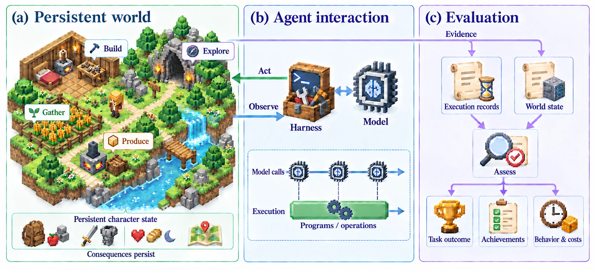
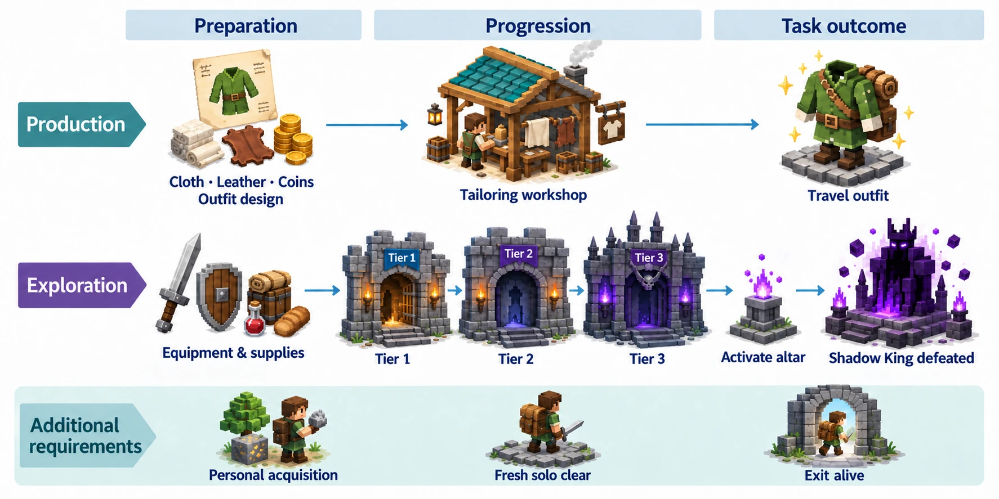

Long-term consequences
Earlier actions change later opportunities. Agents must coordinate gathering, crafting, exploration, and survival across successive decisions.
Persistent environments · Autonomous agents

ASIWorld is a survival sandbox for evaluating sustained goal execution by autonomous agents. It combines persistent world and character state, character-scoped observations, and a programmable asynchronous interface. Agents pursue interdependent production and exploration tasks through direct actions or programs that continue running between model calls. Evaluation considers task success, development achievements, and survival costs, complemented by analysis of execution behavior.
Earlier actions change later opportunities. Agents must coordinate gathering, crafting, exploration, and survival across successive decisions.
Agent-authored programs can continue between model calls, connecting planning with asynchronous operations in the world.
Task success is assessed alongside achievements and survival costs to reveal differences in how agents attain their goals.
Two task families test coordinated execution through dependencies, preparation, and changing world state.
Production
Acquire materials and currency, coordinate crafting dependencies, and produce the required travel outfit.
Exploration
Prepare equipment and supplies, progress through dungeon tiers, and defeat the Shadow King.

Assessing whether agents achieve their goals, how far they progress, and what attainment costs.
| Dimension | What it measures |
|---|---|
| Task outcomes | Attainment of the specified production and exploration goals. |
| Development achievements | Additional progression criteria fulfilled during execution. |
| Survival costs | Costs associated with pursuing and attaining the goals. |
| Execution behavior | Preparation, action allocation, combat, and recovery along the trajectory. |
The manuscript reports an exploratory study of nine agent configurations using a common harness. The paper and accompanying materials will provide the evaluation protocol and results.
Paper and benchmark materials will be linked here upon release.
Manuscript and citation information
Environment and evaluation resources